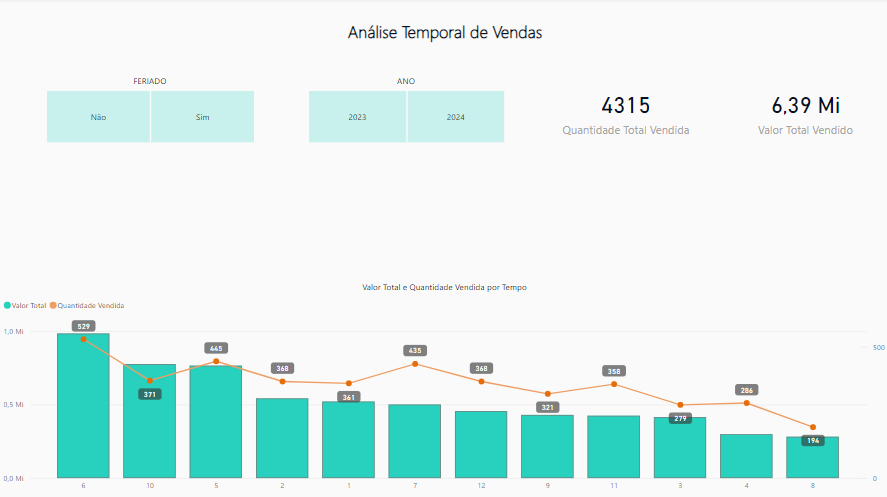
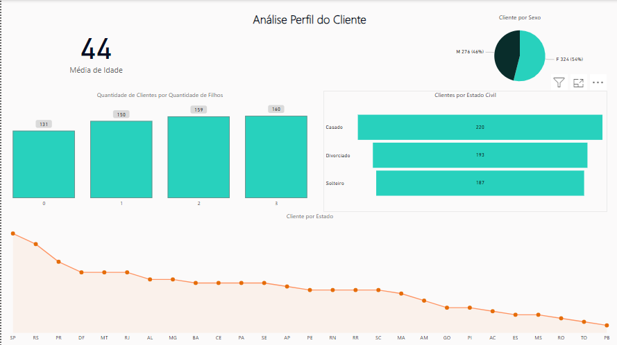
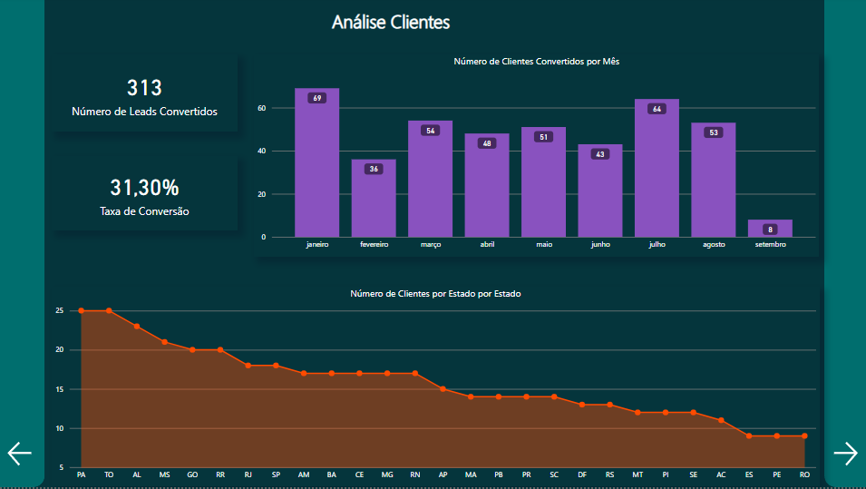
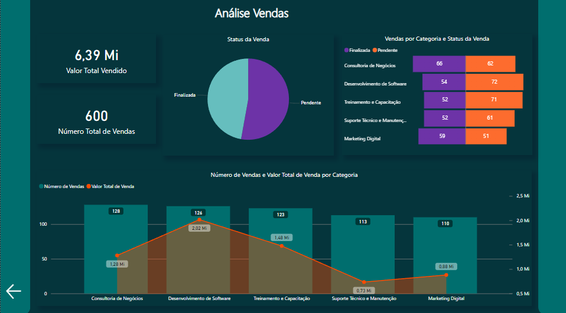
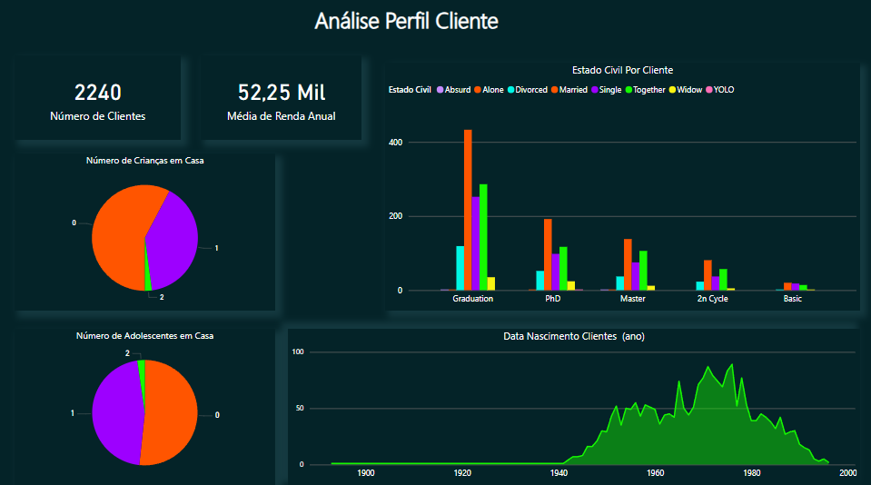
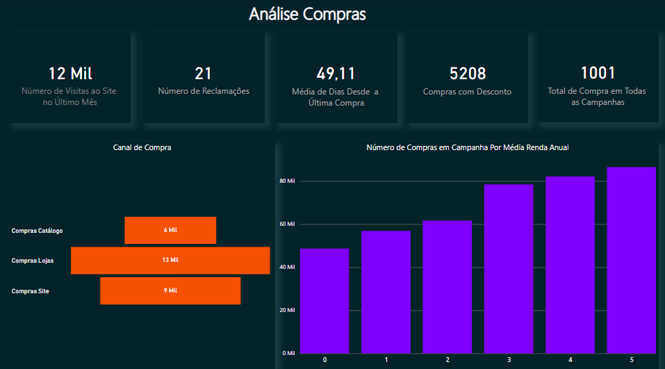
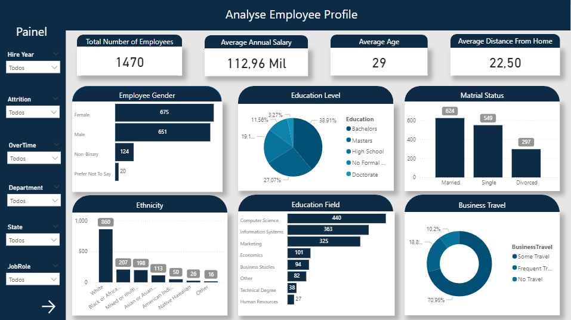

Desenvolvimento de dashboards para monitorar e otimizar as estratégias de vendas, identificando tendências e oportunidades.
Análise Financeira
Criação de relatórios financeiros para análise de performance, controle de despesas e planejamento orçamentário.
Análise de Dados CRM
Análise de dados de CRM para entender o comportamento do cliente e melhorar estratégias de retenção e aquisição.
Análise de Dados Marketing
Avaliação de dados de campanhas de marketing para otimizar ROI e ajustar estratégias de mercado.
Análise de Dados RH
Análise de dados de RH para entender o perfil dos funcionários e suas avaliações de desempenho.
✖
Análise de Vendas
Bem-vindo(a) ao meu projeto de Análise de Vendas.
Análise de Vendas
Análise de Vendas
Bem-vindo(a) ao meu projeto de Análise de Vendas
1º Passo - Banco de Dados
Para a criação do banco de dados, optei por utilizar o "PostgreSQL" juntamente com a ferramenta "DBeaver".
2º Passo - Modelagem
Para dar início às modelagens, comecei pela modelagem de dados conceitual em um bloco de notas comum, onde escrevi em forma de tópicos o que seria necessário, pensando nos requisitos de negócios que gostaria de analisar e o que seria interessante visualizar.
Após fazer o modelo conceitual, utilizei o DrawSQL, uma plataforma online, para montar meu modelo lógico, montando a tabela fato e as dimensões, adicionando as métricas fundamentais em cada uma, fazendo todo relacionamento necessário entre as tabelas. Ao finalizar o modelo lógico, a plataforma "DrawSQL" permite fazer a exportação do arquivo para MySQL, PostgreSQL, etc. Baixei o arquivo do modelo lógico e o executei no Visual Studio Code, já integrado com meu banco de dados.
Para automatizar a inserção de valores nas tabelas, utilizei um script Python que inseriu dados fictícios no banco de dados. Esse script continha as informações de conexão ao banco e os comandos necessários para popular as tabelas.
Minha tabela FT_VENDAS necessitava de uma coluna que mostrasse o valor total de vendas. No DBeaver, criei um script SQL que adicionou essa coluna e atualizou os valores, realizando um JOIN entre as tabelas de produtos e vendas.
Veja o exemplo do script SQL:
ALTER TABLE FT_VENDAS ADD COLUMN VALOR_TOTAL DECIMAL;
UPDATE FT_VENDAS
SET VALOR_TOTAL = QUANTIDADE * (SELECT PRECO_UNITARIO FROM PRODUTOS WHERE ID_PRODUTO = FT_VENDAS.ID_PRODUTO);
5º Passo - Ferramenta de BI
Para realizar as análises e montar os relatórios, utilizei o Microsoft Power BI. Integrei meu banco de dados PostgreSQL ao Power BI para que qualquer modificação fosse atualizada automaticamente nos relatórios.
Requisitos de Negócio
Análise de Desempenho de Produtos
Análise de Desempenho de Vendedores
Análise Perfil do Cliente
Análise de Canais de Venda
Análise Temporal de Vendas
Links dos Arquivos
Análise de Desempenho de Produtos

Análise Temporal de Vendas
Análise de Desempenho de Vendedores

Análise Perfil do Cliente
✖
Análise Financeira
Bem-Vindo ao meu relatório de Análise Financeira.
✖
Análise de Dados CRM
Bem-Vindo ao meu relatório Análise de Dados CRM.
Análise de Dados CRM
Análise de Dados CRM
Bem-vindo(a) ao meu projeto de Análise de CRM
1º Passo - Banco de Dados
Para a criação do banco de dados, optei por utilizar o "PostgreSQL" juntamente com a ferramenta "DBeaver".
2º Passo - Modelagem
Para dar início às modelagens, comecei pela modelagem de dados conceitual em um bloco de notas comum, onde escrevi em forma de tópicos o que seria necessário, pensando nos requisitos de negócios que gostaria de analisar e o que seria interessante visualizar.
Após fazer o modelo conceitual, utilizei o DrawSQL, uma plataforma online, para montar meu modelo lógico, montando a tabela fato e as dimensões, adicionando as métricas fundamentais em cada uma, fazendo todo relacionamento necessário entre as tabelas. Ao finalizar o modelo lógico, a plataforma "DrawSQL" permite fazer a exportação do arquivo para MySQL, PostgreSQL, etc. Baixei o arquivo do modelo lógico e o executei no Visual Studio Code, já integrado com meu banco de dados.
Para automatizar a inserção de valores nas tabelas, utilizei um script Python que inseriu dados fictícios no banco de dados. Esse script continha as informações de conexão ao banco e os comandos necessários para popular as tabelas.
Minha tabela FT_VENDAS necessitava de uma coluna que mostrasse o valor total de vendas. No DBeaver, criei um script SQL que adicionou essa coluna e atualizou os valores, realizando um JOIN entre as tabelas de produtos e vendas.
Veja o exemplo do script SQL:
ALTER TABLE FT_VENDAS ADD COLUMN VALOR_TOTAL DECIMAL;
UPDATE FT_VENDAS
SET VALOR_TOTAL = QUANTIDADE * (SELECT PRECO_UNITARIO FROM PRODUTOS WHERE ID_PRODUTO = FT_VENDAS.ID_PRODUTO);
5º Passo - Ferramenta de BI
Para realizar as análises e montar os relatórios, utilizei o Microsoft Power BI. Integrei meu banco de dados PostgreSQL ao Power BI para que qualquer modificação fosse atualizada automaticamente nos relatórios.
Links dos Arquivos
Página Inicial
Leads
Interações
Clientes

Vendas

✖
Análise de Dados Marketing
Bem-Vindo ao meu relatório de Análise de Dados Marketing.
Análise de Campanhas de Marketing
Análise de Campanhas de Marketing
Bem-vindo(a) ao relatório de análise de campanhas de marketing
Análise Geral
O objetivo deste relatório foi analisar o desempenho das campanhas de marketing, o perfil do cliente e os produtos/categorias com mais rendimento.
Essa foi uma análise um pouco mais simples, sendo que as ferramentas utilizadas foram apenas o Site da fonte de dados, o Excel e o Microsoft Power BI.
Verifiquei a consistência dos dados e fiz a transformação e limpeza necessária e comecei a análise.
Página Inicial
Perfil do Cliente
No perfil do cliente, é possível observar que tanto para crianças em casa quanto para adolescentes, os números são bem parecidos. Mais de 50% dos clientes não possuem filhos e apenas uma pequena parte possui 2 filhos.
Também é possível observar que a maior parte dos clientes tem uma graduação ou são casados, solteiros, ou estão namorando ou morando juntos. Há poucos clientes com uma formação básica.
Em relação ao ano de nascimento, é possível observar que a maioria dos clientes possui idades entre 40 e 60 anos.
Perfil Cliente

Análise de Campanhas
Na análise das campanhas, é possível observar que a campanha com maior retorno foi a última realizada, enquanto a campanha de número 2 teve o menor retorno.
Em relação aos gastos com produtos, é notável que a maioria dos clientes gasta mais com vinhos e carnes, e menos com doces e frutas.
Também temos a relação do total de compras durante o período de 2012 a 2014.
Análise Campanhas
Análise de Compras
Nesta análise, é possível ver a quantidade de visitas ao site, o número de reclamações, a média de dias que os clientes ficam sem comprar desde a última compra, a quantidade de compras com descontos, e o total de compras entre todas as campanhas juntas.
Podemos observar que os clientes preferem fazer compras diretamente nas lojas e evitam compras por catálogo.
Por último, temos a quantidade de compras nas campanhas por média salarial.
Análise Compras

Análise de Compras por Grupo
Na análise de compras por grupos, temos o total de compra em todas as campanhas em relação à quantidade de adolescentes e crianças em casa. É notável que quanto menos ou nenhum filho, as compras são bem maiores.
Em relação às compras por estado civil, clientes casados compram muito mais do que os solteiros.
Da mesma forma, clientes com graduação têm um poder de compra muito maior do que clientes com formação básica.
Análise Compras Grupo
✖
Análise de Dados RH
Bem-Vindo ao meu relatório de Análise de Dados RH.
HR Data Analysis
HR Data Analysis
Welcome To The HR Data Analysis Report
General Analysis
The objective of this report was to analyze the employee profile and performance.
The data was extracted from Kaggle, and you can access it using the following link: Kaggle Dataset.
This was a relatively straightforward analysis, utilizing only the data source website, Excel, and Microsoft Power BI.
I checked the data consistency, performed the necessary transformation and cleaning, and began the analysis.
Analyse Employee
In analyzing the employee profile, we have a total of 1,470 employees, with an average annual salary of $112,000, an average age of 29 years, and an average distance of 22.5 km between home and work.
We can observe that the majority of employees are women, hold a degree in Computer Science, are married, belong to the White ethnicity, and frequently travel for business.
In the left panel, we can select various options to view, such as the year of hiring, current employment status, overtime hours, department, state of residence, and more.
Analyse Employee

Analyse Satisfaction
Here we have a total of 6,709 reviews and a satisfaction level where we can analyze job satisfaction, relationship satisfaction, and environment satisfaction.
Analyse Satisfaction
Analyse Ratings
We have the number of training sessions available per year, the number of individuals who attended the training, and how many sessions were conducted. We also have data on work-life balance, self-assessment, and manager evaluation.